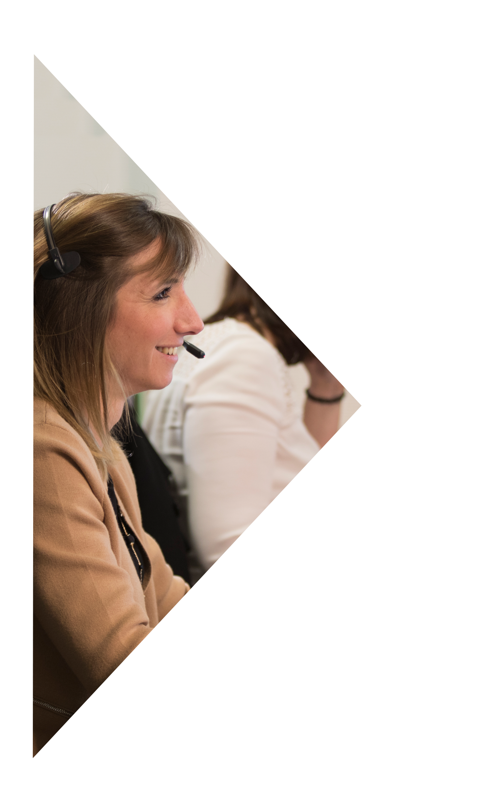
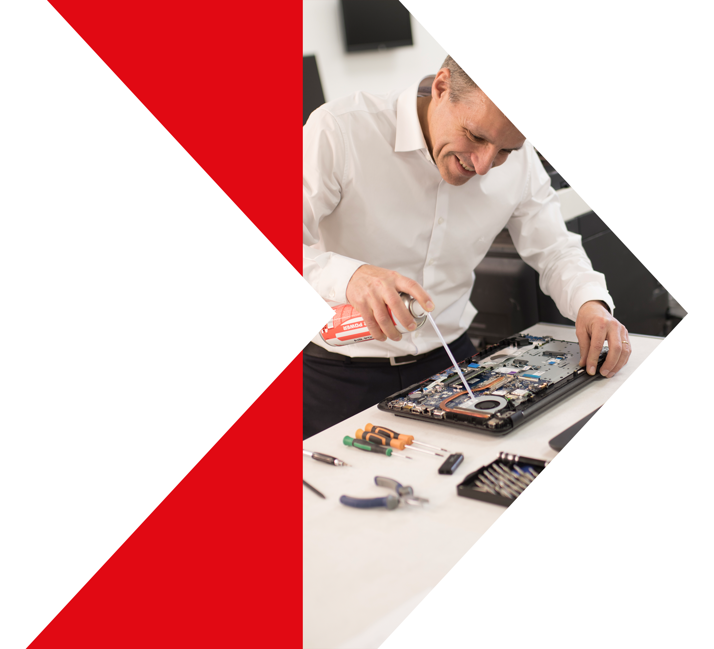
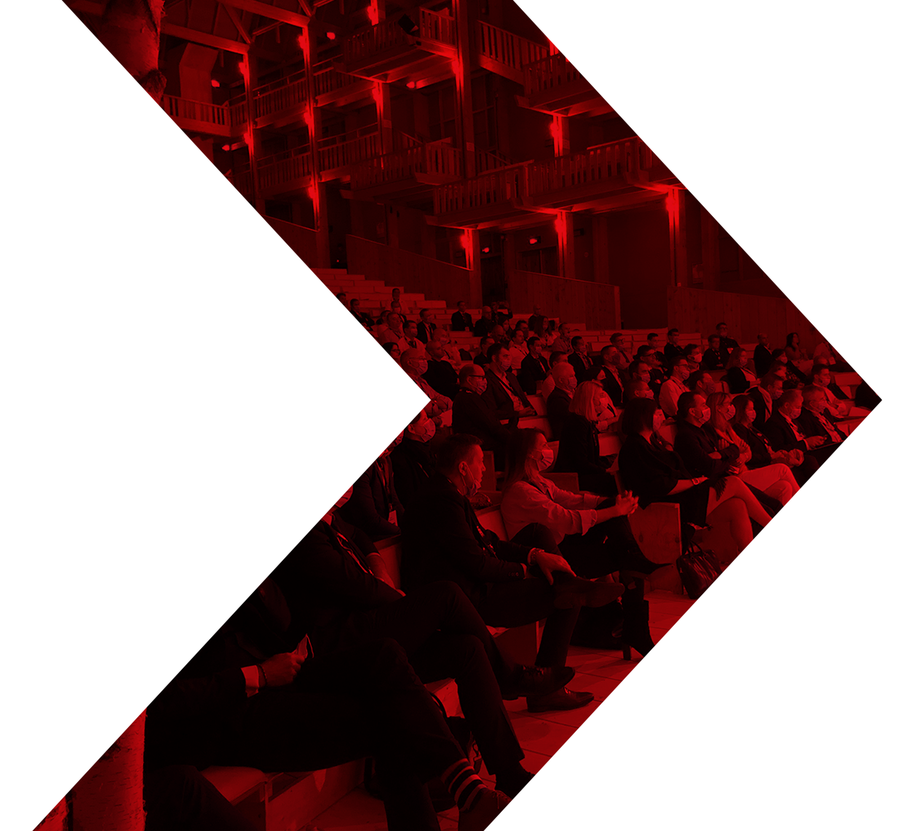

Masque plein

Chevron + photo

Chevron écrêté
C'est le seul emploi d'imagerie photographique de la marque : jamais de photo en pleine page, toujours contenue dans le chevron ou accolée à lui. Le chevron écrêté sert aux supports du réseau de franchise.